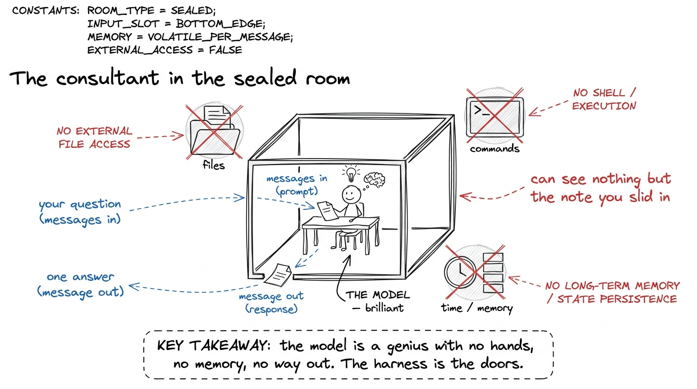
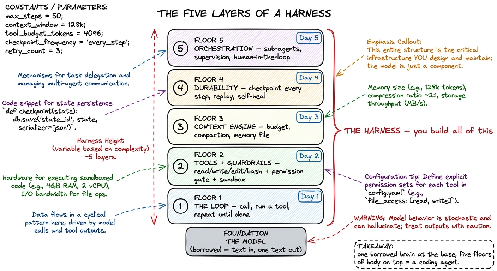
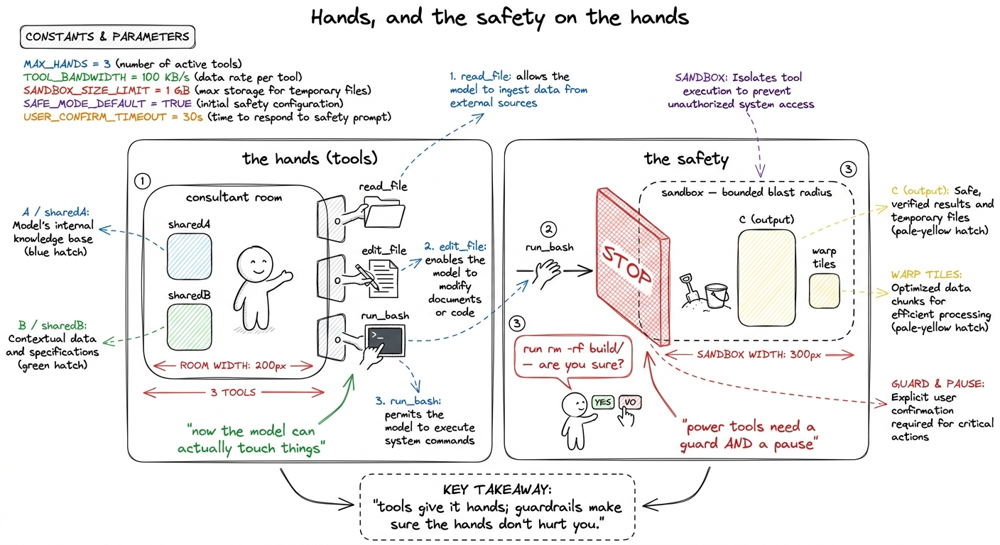
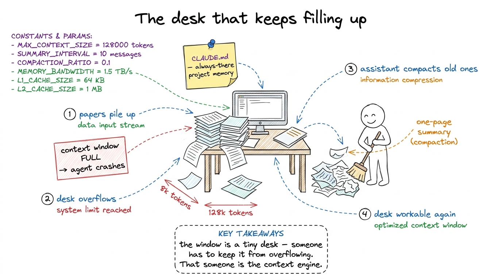
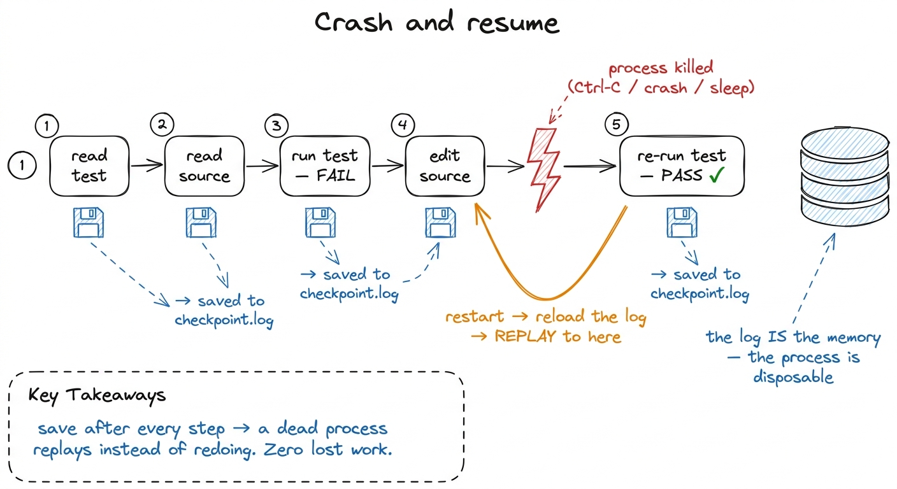
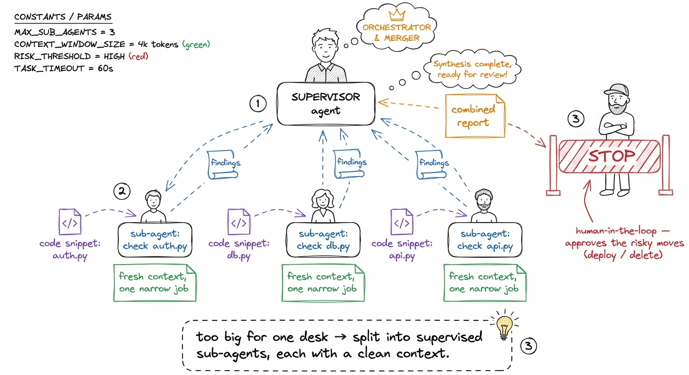

The five layers, drawn
By the end of this chapter you can walk to the whiteboard on the first morning, draw a five-box tower from memory, and teach a room full of people the entire shape of what they are about to build — so that for the rest of the week, every single thing you say has a home on that drawing. This is the one picture you will point back to twenty times. Get it in your bones and the whole workshop hangs together.
We are not going to write any code in this chapter. We are going to learn the map. Because here is the quiet truth about teaching a hard thing over five days: students don't get lost in the details. They get lost because they lose the shape — they forget where the thing on the screen fits in the thing as a whole. Your job with this map is to make sure that never happens. Every morning you point at a box and say "today, we build this one."
Start from the one thing the model can't do
Before you draw a single box, you have to make students feel the hole the whole tower is filling. So you start not with the tower — you start with the model, alone, and its one embarrassing limitation.
A large language model does exactly one thing. You hand it a list of messages, it hands you back one more message. Text in, one text out. That's the whole primitive. It has no memory of the last call. It cannot open a file. It cannot run a command. It doesn't even know that time is passing.

figure rendering · The starting point: a brilliant model sealed in a room — it can answerSay that, and let it land. Now they want the tower, because you've shown them the hole it fills.
The tower: five floors, one borrowed brain
Now you draw. Draw a tower of five boxes, stacked. At the very bottom, small and greyed-out, put the model — because it's borrowed, it's a commodity, it's not the part you build. Then above it, five floors, each a power the model didn't have.
Draw it bottom to top and name each floor as you go. Don't explain them yet — just name them, so students see the whole silhouette before any one floor gets deep.

figure rendering · The map you draw on day one: a borrowed model at the foundation, thenHere is the rule that makes the tower honest, and you should say it out loud: we never add a floor for its own sake. We add each floor at the exact moment the harness below it visibly breaks without it. That's the whole pedagogy of the week. Build floor 1, watch it fail in a specific way, and the failure is the reason for floor 2. This map isn't a list of features — it's a chain of "and then it broke, so we needed...".
Floor 1 — the loop (the heartbeat)
The bare model answers once and stops. But real work is many steps: look at the test, read the source, run it, see the error, fix it, run it again. So the first floor is a loop: call the model, check if it asked to use a tool, run that tool, hand the result back, and go around again — until the model says "I'm done."
test_login.py" → loop reads it, hands text back. (2) model says "run the test" → loop runs it, hands the traceback back. (3) model says "I found it, here's the fix — I'm done" → loop stops. Three trips around the circle and a bug is understood. That circle is the entire heartbeat of every coding agent alive.This is Day 1, and it's the smallest floor — a genuine acting agent in about forty lines. When students see the loop run for the first time, watch the room. It's the first "oh, that's all it is?" moment, and it's a good one.
Floor 2 — tools and guardrails (hands, and the safety on the hands)
The loop can go around, but around to do what? The model can only produce text. To actually touch your computer, it needs tools — read_file, write_file, edit_file, run_bash. A tool is a real function you write; you describe it to the model, and when the model asks for it, the loop runs it.
But the moment you give the model hands, you have to give those hands a safety. The same run_bash that runs your tests can run rm -rf if the model is confused. So this floor is really two things stacked together: the hands (tools) and the safety on the hands (a permission gate that pauses and asks before anything dangerous, plus a sandbox so even an approved mistake can't burn the house down).

figure rendering · Floor 2 is two things at once: tools that give the model real hands, aThis is Day 2. The demo that sells it: run the agent with no permission gate, let it propose a scary command, and let the room feel the flinch. Then add the gate. That flinch is the whole lesson.
Floor 3 — the context engine (what the model sees each turn)
Now a subtle one, and the one students under-rate. Every time the loop calls the model, it has to hand over the whole conversation so far — every file read, every command output. But the model's memory (its context window) has a hard size limit. On a long task, that history grows and grows until it no longer fits. A naive loop just hits the wall and crashes.
So floor 3 is the context engine: the thing that decides, every single turn, what goes into that limited window. When it's getting full, it summarizes the old turns into a compact digest and keeps going. And alongside it, a memory file (a CLAUDE.md-style note) so the agent starts every session already knowing the shape of your project instead of rediscovering it.

figure rendering · Floor 3, the context engine: the model's window is a small desk that oThis is Day 3. It's the least visual floor and the one that separates a demo toy from something that survives a real, long task.
Floor 4 — durability (the save point)
Real agents get interrupted. You hit Ctrl-C. The network blips. The laptop sleeps. If the agent's only memory of a twenty-minute task is a variable in a running program, that interruption is a total loss — every step gone, start over from zero.
Floor 4 fixes that. We make the harness write every step to disk as it happens — the messages, the tool results, where it is in the loop. So when a fresh process starts up, it reloads that log and replays to exactly where it left off, instead of redoing everything.

figure rendering · Floor 4, durability: every step is written to a checkpoint log, so a kThis is Day 4.
Floor 5 — orchestration (the manager and the team)
The top floor. Some jobs are simply too big for one desk, no matter how well you sweep it. "Audit this entire service for security bugs" isn't one task — it's twenty small investigations. Cramming all twenty into one conversation muddles them and overflows the window.
So the top-level agent learns to act like a manager: it spawns focused sub-agents, each with its own fresh desk, hands each one a narrow job ("check this file for injection bugs"), and folds their findings back into the main thread. And for the moves that should never be fully automatic — deploying, deleting, spending money — there's a human-in-the-loop gate: the manager stops and checks with a person.

figure rendering · Floor 5, orchestration: a supervisor agent splits a huge job across foThis is Day 5, the capstone floor. Stack all five on a borrowed model and you have exactly what Claude Code, pi, and Cursor are.
How to use this map for the rest of the week
The map is not a one-time drawing. It's a home base you return to every morning. Redraw the tower (or keep it on a poster on the wall), and start each day by pointing: "here's where we are — floors 1 and 2 are built, they're solid, and today we build floor 3, because yesterday's harness broke in this way..."
1 If a student pushes back with "but frameworks already give me an agent object," agree and reframe: yes, and the whole point of the week is that you'll understand every floor well enough to rebuild it on a plane with no internet. Owning the map is worth more than importing the object.
You can now teach
- The hole the harness fills: the model as a brilliant consultant sealed in a room — text in, one text out, no hands, no memory, no way to act — so students feel why every floor is needed.
- The five-layer tower from memory, bottom to top: the borrowed model, then the loop, tools + guardrails, the context engine, durability, and orchestration — one floor per day.
- A one-line metaphor for each floor you can redraw instantly: the recipe cook, the power tools with a safety, the overflowing desk, the video-game save point, and the manager with a team.
- The break-then-build pedagogy: each floor is added at the exact moment the floor below it visibly fails, so the week is a story of cause and effect, not a checklist of features.
- The "the harness is the product, not the model" reframe — the most important confusion to kill on day one — and how to use the tower as a daily home base you point back to all week.